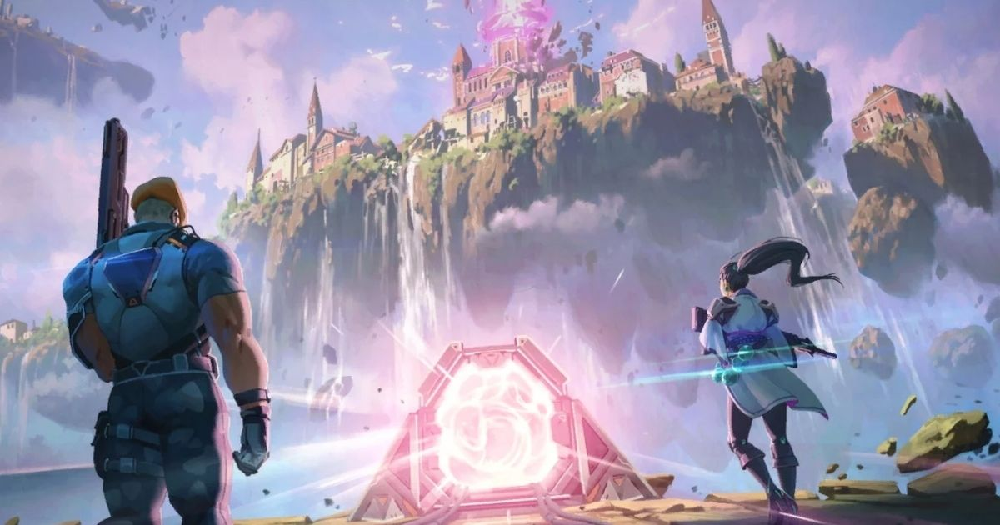
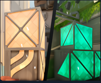
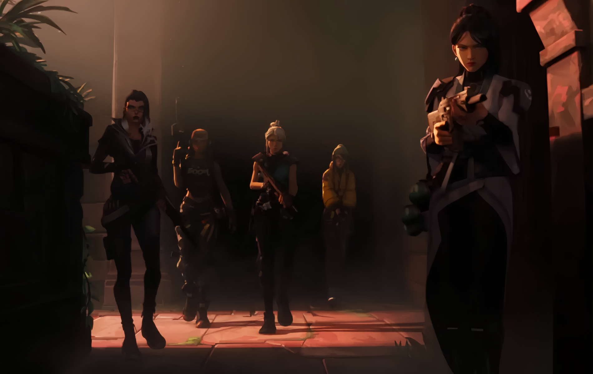
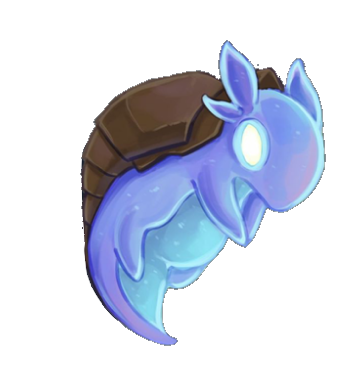
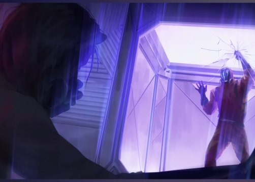
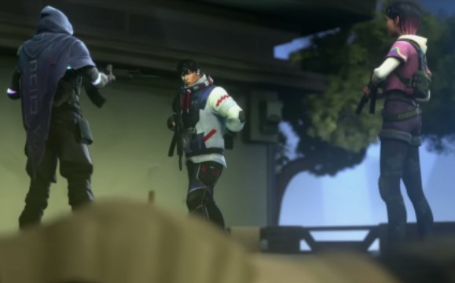

История VALORANT довольно сложна, поскольку официальная информация от разработчиков предоставляется нечасто и в ограниченных объемах. Тем не менее, на сегодняшний день вышло 9 эпизодов игры, что позволяет глубже понять события и обстоятельства этой увлекательной вселенной. Давайте отправимся в мир VALORANT и ознакомимся с его лором.
ЛОР ВСЕЛЕННОЙ VALORANT

ПРЕДЫСТОРИЯ
Все началось с Первого Света, произошедшего в 2039 году. Это событие ознаменовало появление радианита — нового источника энергии, который человечество стало активно использовать. С радианитом в нашем мире появились радианты. Эти уникальные личности делятся на две категории: те, чье тело содержит радианит, благодаря чему у них проявились способности после первого Света, и те, кто научился использовать эти способности. В мире VALORANT существует компания под названием KINDOM, которая первой взялась за сбор и исследование радианита. После проведения множества исследований было принято решение создать команду под названием «Протокол VALORANT». Каждый радиант, вступающий в этот секретный отряд, должен хранить информацию под строгим секретом, что приводит к тому, что они прощаются со своей обычной жизнью. У каждого агента своя мотивация для этого выбора.
ЭПИЗОД 1-4
История VALORANT начинается с первого столкновения в 2049 году: в Венеции сражаются Джетт и Феникс. Несмотря на то, что они являются частью одной команды, причина их конфликта укрыта в загадочной концепции зеркального мира. Этот альтернативный мир населён такими же агентами, как они, но с тёмными намерениями — похитить радианит, используя специальное оружие под названием Спайк, предназначенное для его поглощения. Параллельная планета, откуда прибывают зеркальные радианты, известна как планета Омега. Сюжет продолжает развиваться на карте Fracture, где раскрывается результат неудачного эксперимента компании Kindom на планетах Альфа и Омега. Разлом разделяет карту на пустынный сектор Омега и плодородный сектор Альфа. На Омеге жители изучали радианит гораздо глубже и шире, чем учёные на Альфе, что может объяснять их стремление к похищению радианита из-за истощения местных запасов. Ящики с радианитом на Омеге имеют оранжевый цвет — это признак активированного радианита. Он менее стабилен и более опасен, но предоставляет значительно больше энергии, что позволяет зеркальным агентам открывать порталы в другие вселенные.
Чембер становится первым агентом, который устанавливает контакт со своим зеркальным двойником. Вместе они планируют саботаж, взрывая реактор. После этого Вайпер с нашей планеты обнаруживает портал Омега, и поручает Килл Джой его изучение с целью разработки аналогичного устройства.

ЭПИЗОД 5
Для обеспечения необходимого количества энергии было решено привлечь Неон. Однако исследования могли бы зайти в тупик, если бы Чембер не предоставил Килл Джой правильные чертежи для портала между измерениями. Пока Килл Джой и Неон работали над порталом, агент Йору отправился на S22 для изучения разрушенного военного корабля. В ходе исследования были обнаружены пространственные рубцы, а на маске Йору оказались частицы радианита, что указывает на то, что радианит существовал всегда и его количество увеличилось после первой вспышки. Во время попытки исследовать межпространственные швы Йору провалился в прошлое, где его кто-то звал, но он не смог ответить. В процессе работы над порталом появилась информация о Джетт и Фениксе, которая начала распространяться в сети, вызывая вопросы у сотрудников семей Эверетт-Линд.
Бримстоун принял решение остановить работу над порталом и сосредоточиться на поисках шантажиста, который имел досье на каждого агента «Протокола VALORANT». В ходе расследования выяснилось, что шантажистом оказалась Фейд, которая мстила протоколу за потерю кого-то важного. Однако после допроса Сайфера стало ясно, что это сделали агенты с Омеги. Сайфер предложил Бримстоуну использовать Фейд, так как она действовала из незнания и, по сути, могла стать на их сторону. Бримстоун предложил ей вступить в протокол, и Фейд согласилась, став n-агентом. После разрешения вопроса с шантажисткой работа над порталом продолжилась, чтобы вернуть похищенный радианит. Первый проход оказался успешным, но также вызвал новые вопросы, так как Фейд начала чувствовать страхи горожан. Второй переход осуществила команда Килл Джой, Рейны и Неон. В этот момент произошло первое сражение не на нашей территории, в ходе которого команда была вынуждена отступить, получив лишь ограниченную информацию. По возвращении на нашу планету Килл Джой сообщила Бримстоуну, что место, куда они попали, не является производством оружия, а представляет собой систему жизнеобеспечения под куполом.
ЭПИЗОД 6
Сайфер получает информацию о том, что Омега получила доступ к могущественной силе, что может угрожать Альфе. В связи с этим протокол принимает в команду важного агента Харбара.
Харбар и Астра отправляются на Омега Землю в город цветов, который когда-то был резиденцией астральных защитников другого класса в этой вселенной в следствии чего происходит столкновение двух планет., а в последствии и взрыв.

ЭПИЗОД 7
В это время учёные из корпорации Kindom приступили к экспериментам над животными. Итогом таких экспериментов стали новые существа, усиленные радианитом. В следствии чего, протокол пригласили к себе в команду таких агентов как Гекко и Дедлок.
В следствии таких экспериментов Бримстоун усомнился в благом намерении Kindom помочь людям используя радиатин. В следствии чего он принял решение возглавить протоком VALORANTи напасть на одну из таких станций, где находился портал и атаковал находящихся там военных и учёных. Во время подобной потасовки портал отдаёт взрывную волну, от которой не пострадал только зверёк Гекко, который смог сломать портал. На место разращённого портала прибывают учёные и солдаты, однако они были ликвидированы неизвестным радиантом.

ЭПИЗОД 8
Неизвестный радиант по имени Айсо, работающий на тайную организацию, убивает всех на месте разрушенного портала. Однако присоединение к Протоколу VALORANT ставит его перед новым выбором — бороться за добро. Он оставляет улики для Сайфера, чтобы тот раскрыл его.
В это время Омена мучал интерес о своём прошлом. Однако, появление Айсо дало ему какие-то наводки, в следствии чего он начал изучать организацию «Дети песочных часов».
Изучая библиотеку в Оренбурге, Омен встречает Клов, которая решает вступить в Протокол VALORANT и делится своими опытом: однажды «Дети песочных часов» убили её, когда она получила доступ к загадочному дневнику. Благодаря своей способности к перерождению, Клов смогла выжить.
Собрав необходимую информацию, Омен запрашивает разрешение у Бримстоуна на отправку в Джакарту, где находится штаб «Детей песочных часов». Бримстоун соглашается и отправляет с Оменом Айсо, Сайфера и Сову для выполнения этой опасной миссии. Проникнув в кабинет одного из лидеров организации, Омен оказывается в ловушке: его заточают в специальной камере, которая сдерживает его силу. В этом состоянии к нему приходят смутные воспоминания о прошлом.

ЭПИЗОД 9
После инцидента Клов вспоминает, что представители организации “Дети песочных часов” говорили о том, что дневник нужно доставить на указанную базу, которой является Карта Эбис. Омен, Айсо и Клов направляются именно туда и расправляются со всеми, кто там находится. В результате для Протокола VALORANT открывается тайна организации «Детей песочных часов»: они намеренно убивают радиантов и делают всё возможное, чтобы ограничить количество людей, связанных с этим материалом.
